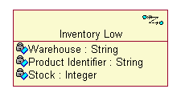
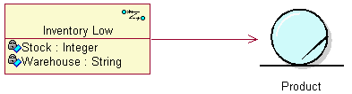
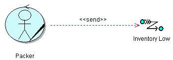
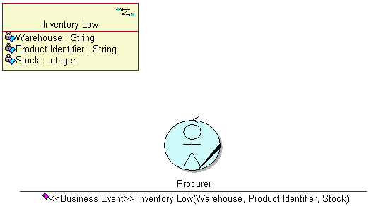
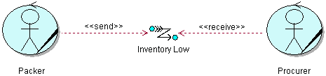
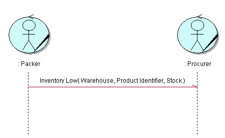
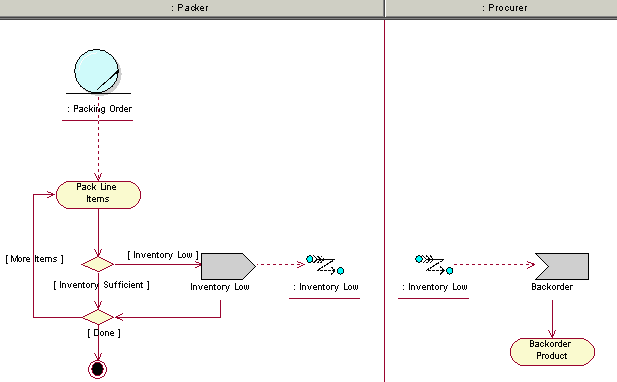
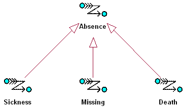

Explanation
Business events represent important occurrences in the day-to-day tasks of the business. Of course, there are thousands
of things happening in and around any business each day. Business events allow us to manage complexity by focusing
attention on what is really important, and in this sense they are architecturally significant. Business events have the
following characteristics:
-
They represent an occurrence of significance, i.e., they are nontrivial.
-
They appear to occur at random, or at least unpredictably.
-
They occur independently of one another.
-
They result in some immediate action by the business.
A business event that does not have one of these characteristics is suspect.
Business events are triggered and received by business actors, business workers, and business entities, while
interacting to realize a business use. Business events can be triggered:
-
By business actors to indicate the start or end of a business use case. For example, when a supplier delivers
goods, a Delivery business event would indicate the start of the Deliver Goods business use case.
-
By business entities to indicate a change of state. For example, as part of the Recruit Employees business use
case, a CandidateQualified business event would indicate that the references of a potential employee have been
checked.
-
By business workers to indicate a specific point within a business use-case realization. For example, once a rocket
has been launched, a Launch business event would indicate that tracking the trajectory of the rocket can start.
-
By the elapse of time. For example, six hours after a patient has come out of the operating room, a PatientCoherent
business event would indicate that a nurse should go and check up on the patient.
Modeling Business Events
Business events can contain information that provides more context about the occurrence the event represents. This
information is modeled as attributes of the business event class, as shown in the figure. The attributes of a business
event can be determined by considering what information the receivers of the event require in order to take
action.

Business events that represent changes in the state of business entities should have an association to the business
entity to which they relate, as shown in the figure. This allows receivers of the business event to access the business
entity in question and retrieve the necessary information.

Business actors, business workers, and business entities can both trigger and receive business events. The class that
triggers a business event is called a publisher, while the class that receives a business event is called a
subscriber.
A publisher requires a <<send>> stereotyped dependency to the business events it will trigger, as shown in
the figure.

A subscriber requires an operation stereotyped <<business event>> with the same name as the business event
and parameters that match the attributes of the business event, as shown in the figure. Take note that the operation
signature needs to be kept consistent with the business event name and attributes.

An alternative approach is to invent a <<receive>> stereotyped dependency from the subscriber to the
business event, although this is not standard UML. The operation signatures can be deduced from all the
<<receive>> dependencies. An example of this nonstandard approach is shown in the figure.

Actual triggering of business events is shown in either interaction or activity diagrams. In interaction diagrams, the
publisher sends an asynchronous message to the receiver, with the name of the business event. An example of this is
shown in the figure. Note that the message is asynchronous. This indicates that the publisher does not wait for the
subscriber to finish processing the business event before continuing. Rather, the publisher triggers the business event
and continues directly with whatever it was doing. The subscriber in turn starts processing the business events as soon
as it is received. This represents real life more closely than synchronous messages.

In activity diagrams, the publisher is shown to trigger the business event. The receiver is shown to receive the
business event, either in the same diagram or in another diagram. An example of this is shown in the figure.

Finding Business Events
When an association between a business actor and a business use case is named, a corresponding business event can be
used to signal when the business use case is initiated, which would be a significant occurrence for the business.
Analyze the interactions between business workers in sequence diagrams. For each message between business workers,
consider the following:
-
Location-Messages passed between two business workers at different locations are candidate business events.
-
Time-Messages in which there is a significant time difference between triggering and receiving are candidate
business events.
-
Purpose-Messages that result in actions that have a different purpose in relation to the actions that triggered the
business event are candidate business events.
-
Responsibility-Messages that are performed by a business worker with different responsibilities are candidate
business events.
Analyzing the boundaries of the business systems helps to identify differences in purpose or responsibility.
In activity diagrams, consider whether some action is required directly before or after each task, or whether some
party must be notified of the outcome of a decision point.
Business entities also provide clues for business events. Any significant operations of a business entity are candidate
business events. Statechart diagrams for business entities are very useful. State transitions indicate potential
business events because they may represent a change of state of the business.
When identifying business events, it is useful to imagine a paper office in which the business entities are dossiers,
and clerks read and change the dossiers and carry them around between inboxes and outboxes. As soon as part of a
dossier needs to be duplicated in full so that it can be routed to different destinations, you may have discovered a
business event-there are multiple recipients. Also, when a business worker must write a notice after performing a task,
with the purpose of informing somebody else, that task may also qualify as a business event. Of course the dossiers do
not lie around on desks the whole day-they are filed. When it is necessary to remove a dossier from the filing cabinet
or to place a dossier back into the filing cabinet, consider what led up to the need to remove or return the dossier.
The occurrence that led up to, or triggered, the need to remove or return a dossier may be a business event.
Generalization of Business
Events
Business events may be categorized or grouped into "families" of events by defining generalization relationships
between more generalized and more specialized business events. This allows more than one type of business event to be
treated in the same way by parties not interested in the different subtypes of business events.

The diagram above shows that the Sickness, Missing, and Death of employees are all more specialized versions of the
absence of an employee. Defining the super-type Absence allows any one of the three subtypes to be treated as an
absence. In a consulting firm, for example, the account manager might need to inform the customer that an employee is
absent and arrange for a replacement, irrespective of the reason for the employee's absence. The account manager is
therefore interested only in the business event Absence. The receptionist, on the other hand, might need to undertake
specific action if an employee becomes ill, such as call a doctor or send flowers. The human resources manager and the
employee's manager might need to be informed if the employee has passed away.
In this example, we see that specializations of business events are useful when different parties need to undertake
different actions in response to different (specific) circumstances. Generalizations of business events are useful when
certain parties need to respond in the same way to certain business events, irrespective of the specific circumstances.
In practice, of course, the party will probably be notified of the actual (specialized) event. If an employee has
passed away, you can be sure that the account manager will also be informed of this, but the action undertaken will be
the same. Business event hierarchies do help to create a simpler, more understandable Business Analysis Model.
Automation of Business Events
It makes sense to automate the definition, triggering, and propagation of business events, but this is not always
practical. Sometimes it costs more to build a system that does this than it takes to send an e-mail to a colleague.
Some issues that must be considered when contemplating the automation of business events are:
-
the cost of purchasing or implementing and maintaining a system that automates aspects of event management
-
the technical feasibility of an automated solution
-
the cost of non-automated alternatives
-
the impact of not triggering or receiving certain events
-
the possibility that certain events may cross business boundaries in future
-
the currently available notification channels
In a service-oriented architecture, messages are used to decouple software systems from each other and from physical
locations. Asynchronous messages can also be used to decouple software systems in time. Business events will be
implemented as messages in these types of software systems, although certainly not all messages will have an associated
business event. A very useful application of business events is in Enterprise Application Integration (EAI). Here each
application defines a number of business events to which other applications can subscribe. This allows applications to
interact without directly interacting.
For example, consider an insurance company that has one front-office system for managing customer interactions,
proposals, and contracts. It has a back-office system for administering products and policies. When a customer requests
a proposal, the front-office system collects the necessary information about the customer and insured object. Then the
product administration system calculates premiums based on the information and produces a preliminary insurance policy
that is linked to a proposal. Once the customer accepts the proposal, the policy administration system must finalize
the policy. In this example, there are two messages that are disconnected in time, location, and
responsibility-CalculatePremiums and FinalizePolicy. However, only FinalizePolicy would be modeled as a business event,
because it has some significance outside of the current context.
|